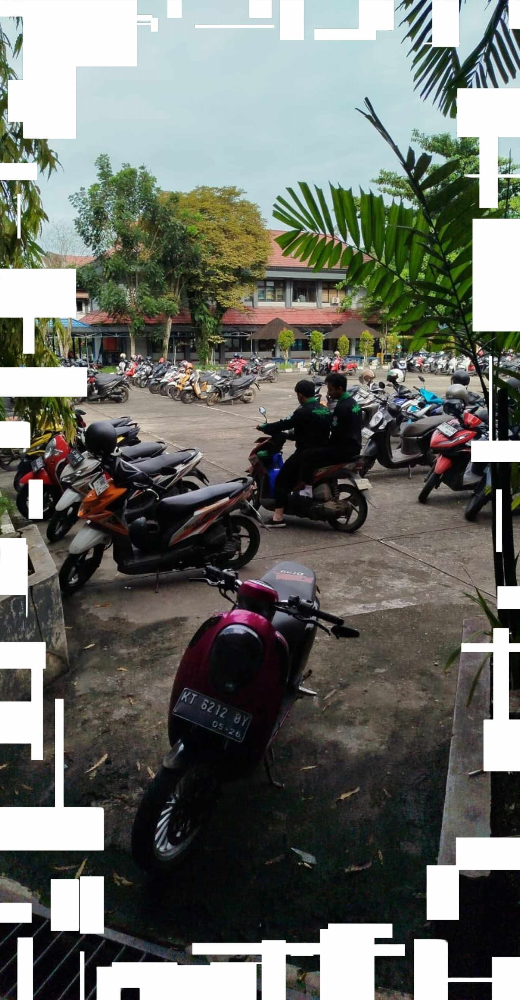
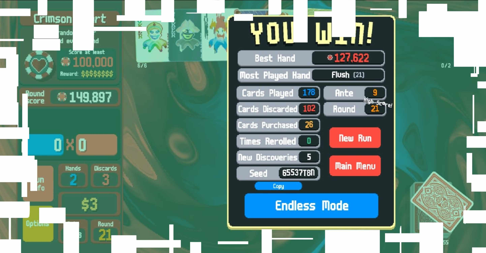
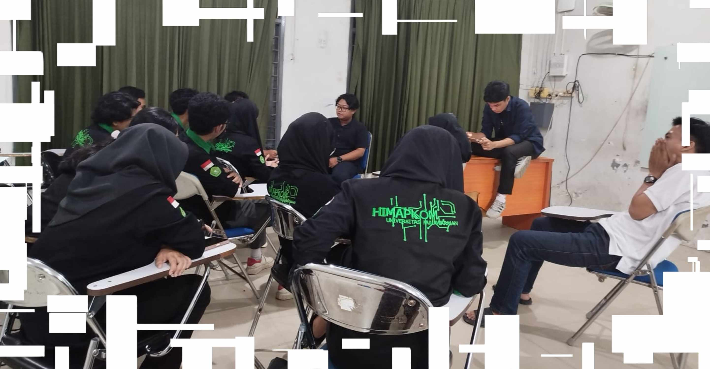
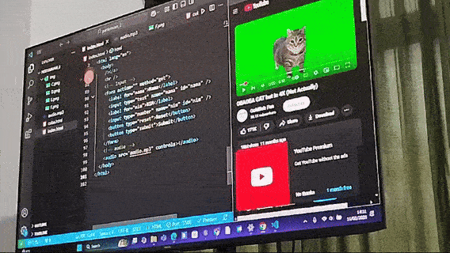
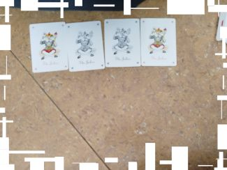

music: confined overture - fourtrifiveO
MENUToday, I woke up at 5 AM. I do not remember the following day. What I DO remember, however, are as follows:
That's all.
My friend indirectly told me to come to college today. I don't know if I'm either couldn't grasp what he was trying to say or am I just confused, but I decided to come. It was 12PM. There were like, 5 people. And then there's me. Wandering around. I don't even know why I'm in that room, they were dicussing about someone elses Division's report. I just felt out of place.
That's all.
8 AM. Going to college. Organization purposes. Used my walking stick, it was cool. My friends wanted to try them. They're fun. I'm really bad at being a Departement Head, but quoting from myself: I'm the only one who can.
Anyway, my leg hurts (because I slipped and hurt my knee). That's why I brought a walking stick in my bag so if I fell and hurt myself, I could still stand up! While relaxing, I played a round of this mobile card game called Balatro and won. I shared it to a friend. It was my second win ever.
2 PM. It was nice in the meeting. Quoting from a video game character,
Being silent and surrounded by people you like is nice!
I'll be useful alongside them someday.
That's all.
I forgot what happened on this day because right now the time of writing this entry is on February 17th 2025. I just forget about the days going foward. This blog will continue from a day that I remember. Isn't that fun?
For compensation, here is a childhood game that I love.
That's all.
There was class this week. Multiple, even. The highlight of this day is Pak Wayan's class, Teknik Multimedia. Couldn't stop smiling the whole day LOL. I was paired with 4 other people (as per usual on his classes) for discussing a certain study case topic. We decided to discuss camera angles to take photos from. Eventually, we tried it on ourselfs.
That's FARIS and myself. Me and VALENT took the photos.
Oh hey, here's a video of AKBAR that VALENT took.
This was also the day that we got this assignment! Pemrograman Web 1 by Pak Ravi. It was an interesting day because we got to use the new PC's in the computer lab. It's very similar to what was used in my high school.
Oh yeah, there were cats.
Overall, fun day!
That's all.
Came to cooleg at like 11PM, we were shooting the last scene for
the cabinet's launching video. Standing there in the sun reminds me of
ceremonies we used to do before college. BAROK, a member of my departement
seemd like he couldn't stand the heat. I mean he looks pissed. At least his friends
tried to cover him with the flags.
I have respect for my team, they seem to know what they're doing, which
is awesome. One of them has a drone. Like, what????
Here's a photo of the cool-as-heck Media Team.
After the shoot wrapped, I stayed for some reason and watched my friends play something called "Jendral"? I never played anything related to actual playing cards before, but FARIS teached me. It was nice.
That's all.
Today, I woke up at 5 AM. I do remember this day because it is the present time. The things that I did are as follows:
That's all for now. Thank you! Farewell.